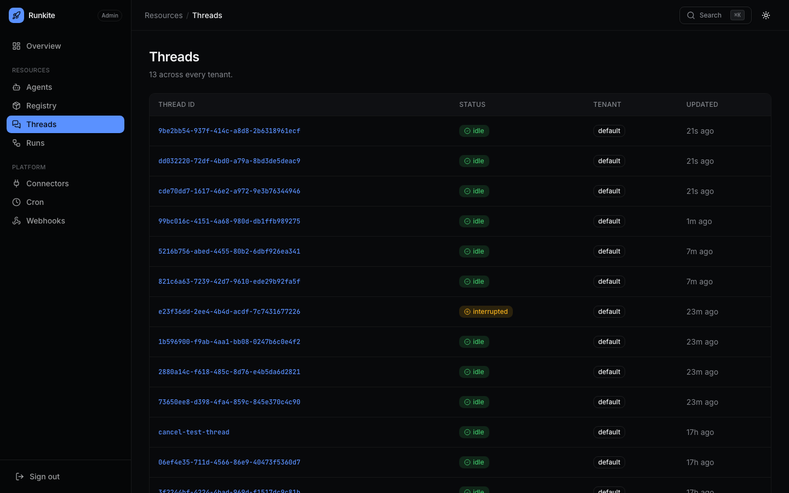

Govern
Multi-tenant keys
Flat tenant_id scoping. Client keys see one tenant. Admin sees every tenant. There is no tenant CRUD UI — a tenant exists when resources are tagged with it.
What it is
On api_key entries set tenant_id. On JWT set tenant_claim (default tenant_id).
Agents, threads, runs, store, cron are filtered by tenant. Cross-tenant ID access returns 404.
Why it is here
Enterprises need isolation without waiting on a full org/workspace hierarchy. Flat claim-driven tenancy ships today; hierarchy can layer later.
How to implement
- Pick stable tenant ids (
acme,default). Avoid:inside ids (checkpoint encoding). - Map each client key to a tenant; issue JWTs with the claim for SSO.
- Bootstrap graphs from config land in
default— create per-tenant agents via API under that tenant’s credential. - When client auth + runner tokens are on, set
RUNNER_TENANTS_<kind>allow-lists. - Operators use Admin (admin permission) for cross-tenant visibility — not a tenant-scoped key.
- Optional hardening: set
RUNKITE_POSTGRES_RLS=trueso Postgres FORCE RLS also filters byapp.tenant_ideven if an application query forgetsWHERE tenant_id. Tenant requestsSET ROLE runkite_app(no BYPASSRLS; DSN needsCREATEROLEand Postgres 16+GRANT … SET TRUE) so this still works when the DSN is a superuser. After Init, missing role membership fails closed. Admin / system paths useapp.is_systemand keep the login role. Turning the flag off and restarting drops Runkite's policies so FORCE does not stick. Postgres only; off by default.
"keys": {
"sk-acme": {"name": "acme-app", "permissions": ["read", "write"], "tenant_id": "acme"},
"sk-ops": {"name": "ops", "permissions": ["read", "write", "admin"], "tenant_id": "default"}
}
In the product
Admin lists show tenant_id per row across tenants

What to expect
- No POST /tenants — documented limitation; visibility is via Admin columns.
- 404 not 403 — cross-tenant probe by id does not confirm existence.
- Next — Admin login, runner auth, credentials.